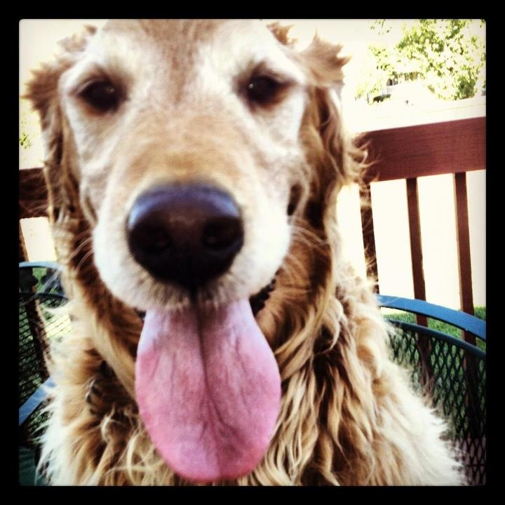

Crazy In Love - Beyonce
02.14.17

Rik and I saw Beyonce in NYC and didn’t appreciate it like we should. We had found out that day our dog, Joe Dirt, had to be put to sleep. He had been with our family for 10 and a half years. Our minds were fixated on that. And more so on the fact that our two oldest children were at home having to deal with this sad situation. In fairness, I believe that Armond was Joe Dirts favorite human. It may have been the greater plan that he be home to spend Dirts last breaths with him.
Had we not been in NYC, Armond would not have been home. I remember that Saturday well. We were walking to the concert and stopped to eat. As we were sitting in this beautiful restaurant, an onlooker would have noticed that we were clearly emotional. Perhaps it appeared as we were dissolving our marriage in that moment. I could not stop crying. I felt like a horrible mother for leaving my adult children behind with our ailing beloved dog.
One thing that was beautiful did happened out of that experience. My son talked to me about it on the phone. He was understandably emotional while he transported our 80 pound dog to the emergency vet clinic to be laid to rest. The vets assured him that this was the right thing to do. My son had slept with him in the bathroom the previous night and was running mainly on adrenaline. He still had his clothes on from the day before and his long hair was a hot mess. He walked in with his leather slippers on. I imagine he may have appeared a tad scary to someone in the pet hospital.
After the vet gently put Joe Dirt down and Armond had said his final goodbyes, he went in the parking lot, visibly shaken. A man from the waiting room came out to the parking lot and gave my son a big, long hug. That night, my son saying that it was the biggest action of kindness from a stranger that he had ever experienced in his 22 years of life. As Armond shared this interaction with me on the phone, I felt as though an angel on earth had been placed there to help him to cope. That did give me a momentary sense of peace.
While Beyonce was great, I would like the opportunity to experience her when my mind was in a better place.
R.I.P Joe Dirt! Rik still gives you an imaginary kiss on the deck when he mows the back yard. Doggy heaven is lucky to have you!
~Peace